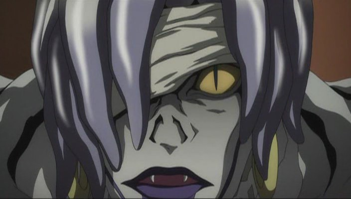

INICIO
CAPITULOS
DEATH NOTHE PERSONAJES
LIGHT YAGAMI
MISA AMANE
RYUK
REM
L. LAWLIET
NATHAN RIVER
MICHAEL KEEHL
KIYOMI TAKADA
TERU MIKAMI
Nayeli Ramírez Juárez todos los derechos reservados ©2015
|
REM

Rem es la Shinigami al cuidado de la Death Note de Misa. A
diferencia de Ryuk, conoce mucho sobre las reglas de los Shinigami y parece mucho más inteligente. Rem envía una de sus
Death Note al mundo humano, pero no le deja caer por accidente como hizo Ryuk, sino que se le da directamente a Misa Amane.
Ésta al tener la Death Note decide descubrir quien es Kira, ya que le estaba muy agradecida porque mato al asesino de sus
padres quien aun estaba en libertad por falta de evidencia pera ser juzgado.
Rem siente un gran amor hacia Misa, el cual heredó del anterior poseedor de la Death Note, Jealous. Muere cuando se da
cuenta de las verdaderas intenciones de Kira (Light), entonces usa su Death Note para matar a Watari y más tarde a L, por
lo que al hacer esto está protegiendo a Misa y firmando su sentencia de muerte. Rem (al igual que Misa) dice que quienes
poseen los ojos Shinigami pueden ver el tiempo de vida de las personas, pero no de quienes poseen una Death Note. Pero en
una escena, Rem, al igual que Ryuk, se ve que pueden ver el tiempo de vida de Misa y Light, aún cuando poseían las Death
Note.
|